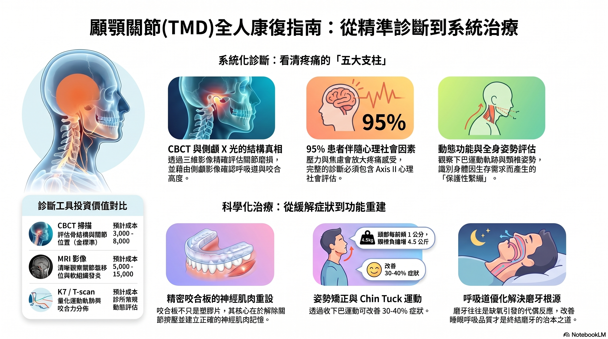

📌 關於這些研究文件
這些文件由趙哲暘醫師整合三大醫學 AI 文獻平台（SciSpace、Elicit、Consensus）查詢超過 220 篇學術論文所彙整。所有文件均為原始完整版，未經刪減。
- 六大主題報告：逆吞嚥、磨牙/OSA、口呼吸、舌繫帶、NCCLs、OMT，各有英文版與中文版
- 進階研究分析（RPT 系列）：五份深度臨床研究分析，含文獻佐證與臨床意涵
- 教學指引（TEACH 系列）：針對民眾、牙醫師、研究者三種受眾的教學框架
- 文獻彙整總報告：完整文獻查詢報告與多系統整合主報告
- 簡報來源文件（PPT 系列）：入門、進階、專家三級簡報的原始研究底稿
- 綜合分析報告（2C 系列）：口腔肌功能整合分析報告
🖼 精選研究資訊圖
顳顎關節與口顎功能：全人康復框架
以下資訊圖由 NotebookLM 根據本站超過 220 篇學術文獻自動彙整生成，呈現口顎功能診斷與康復的整體架構。

▲ NotebookLM 生成資訊圖｜顳顎關節全人康復指南（基於 220+ 篇學術文獻）
36
份研究文件
220+
篇學術文獻來源
雙語
英文 + 中文
免費
完整版公開下載
📚 六大主題核心報告
六大主題：完整文獻回顧
每個主題均有英文與中文兩份獨立報告，包含流行病學、機轉、治療實證，以及學術文獻引用。
01｜逆吞嚥與口顎功能異常（Tongue Thrust / OMD）
| 文件說明 | 語言 | 下載 |
|---|---|---|
| 逆吞嚥的定義、流行率、神經生理機制、臨床評估與 OMT 治療實證 | English | 📥 01_tongue-thrust-omd_EN.md |
| 逆吞嚥完整中文報告，含牙齒損傷、NCCLs、臉型影響 | 中文 | 📥 01_tongue-thrust-omd_ZH.md |
02｜睡眠磨牙症與睡眠呼吸中止症（OSA / Bruxism）
| 文件說明 | 語言 | 下載 |
|---|---|---|
| 磨牙神經生理機制、OSA 共病、牙科介入實證回顧（408 行完整版） | English | 📥 02_osa-bruxism_EN.md |
| 磨牙與 OSA 中文完整報告，含診斷標準與多科整合治療 | 中文 | 📥 02_osa-bruxism_ZH.md |
03｜口呼吸（Mouth Breathing）
| 文件說明 | 語言 | 下載 |
|---|---|---|
| 口呼吸對顏面發育、睡眠、認知的系統影響，病因分析與治療策略 | English | 📥 03_mouth-breathing_EN.md |
| 口呼吸中文完整報告，含兒童顏面骨骼發育影響與臨床介入 | 中文 | 📥 03_mouth-breathing_ZH.md |
04｜舌繫帶沾黏（Ankyloglossia）
| 文件說明 | 語言 | 下載 |
|---|---|---|
| 舌繫帶分類、功能影響、frenlectomy 實證、OMT 整合治療 | English | 📥 04_ankyloglossia_EN.md |
| 舌繫帶沾黏中文完整報告，含哺乳困難、語言、睡眠影響 | 中文 | 📥 04_ankyloglossia_ZH.md |
05｜非齲性齒頸部磨耗（NCCLs）
| 文件說明 | 語言 | 下載 |
|---|---|---|
| NCCLs 多因素病因、逆吞嚥生物力學機轉、修復決策實證 | English | 📥 05_ncls_EN.md |
| 齒頸部磨耗中文完整報告，含舌推力量化數據與磨損型態 | 中文 | 📥 05_ncls_ZH.md |
06｜口顎肌功能治療 / 舌骨 / IOPI（OMT / Hyoid / IOPI）
| 文件說明 | 語言 | 下載 |
|---|---|---|
| OMT 循證實踐、舌骨生物力學、IOPI 量化評估、深頸屈肌整合 | English | 📥 06_omt-hyoid-iopi_EN.md |
| 口顎肌功能治療中文完整報告，含 VFSS、超音波評估框架 | 中文 | 📥 06_omt-hyoid-iopi_ZH.md |
🔬 進階研究分析（RPT 系列）
五份深度臨床研究分析
針對特定臨床問題進行深度文獻整合，含量化數據、研究缺口分析與未來研究方向。
| 編號 | 主題 | 語言 | 下載 |
|---|---|---|---|
| RPT-01 | 齒頸部磨耗與逆吞嚥肌力研究整理——舌推力量化、NCCLs 成因分析 | 中文 | 📥 下載 |
| RPT-02 | 早期矯正與 OSA 共病整合治療方向——擴弓、功能性矯正器、氣道效益 | 中文 | 📥 下載 |
| RPT-03 | 逆吞嚥代償機制完整解析與病因學架構——神經可塑性、颞下頜關節代償 | 中文 | 📥 下載 |
| RPT-04 | 舌骨位移量化評估——IOPI、VFSS、超音波三層分析框架 | 中文 | 📥 下載 |
| RPT-05 | 深頸屈肌訓練與高張力 vs 肌力不足鑑別診斷——頸椎穩定性與吞嚥整合 | 中文 | 📥 下載 |
🎓 教學指引（TEACH 系列）
三種受眾的教學框架
針對不同背景的讀者設計的口顎功能教學文件，從民眾到學術研究者。
| 編號 | 主題 | 語言 | 下載 |
|---|---|---|---|
| TEACH-01 | 一般民眾版——口顎功能與孩子的發育，用日常語言解釋核心概念 | 中文 | 📥 下載 |
| TEACH-02 | 牙醫師 / 矯正醫師版——口顎功能異常臨床診斷與治療框架 | 中文 | 📥 下載 |
| TEACH-03 | 學術研究者版——口顎功能異常研究架構、命題與研究缺口 | 中文 | 📥 下載 |
📋 文獻彙整總報告
完整文獻查詢報告與整合主報告
整合所有主題的完整文獻彙整，以及跨系統影響的多主題整合主報告。
| 類型 | 說明 | 語言 | 下載 |
|---|---|---|---|
| LITERATURE | 完整文獻查詢報告——六大主題全系統文獻彙整，含 SciSpace / Elicit / Consensus 查詢結果 | 中文 | 📥 下載 |
| MASTER | 口顎功能異常多系統影響整合報告——跨科整合、共病機制、臨床路徑完整框架 | 中文 | 📥 下載 |
📊 簡報來源文件（PPT 系列）
入門 / 進階 / 專家三級簡報底稿
所有 Gamma 簡報的原始研究底稿，英文版與中文版均公開，適合深入研讀或二次使用。
| 編號 | 主題 | 英文版 | 中文版 |
|---|---|---|---|
| 入門 1 | 口顎功能健康基礎概念——適合初次接觸的讀者 | 📥 EN | 📥 ZH |
| 入門 2 | 口顎功能健康基礎概念 Part 2——延伸入門知識 | 📥 EN | 📥 ZH |
| 進階 1 | 口顎功能異常進階臨床分析——生物力學、評估工具、治療決策 | 📥 EN | 📥 ZH |
| 進階 2 | 口顎功能異常進階臨床分析 Part 2——多科整合與治療路徑 | 📥 EN | 📥 ZH |
| 專家 1 | 口顎功能研究循證實踐——系統性回顧方法、研究缺口、未來方向 | 📥 EN | 📥 ZH |
| 專家 2 | 口顎肌功能治療進階實踐——神經生理、量化評估、訓練方案設計 | 📥 EN | 📥 ZH |
🧩 綜合分析報告（2C 系列）
口腔肌功能整合分析報告
整合兩大核心面向（臨床應用 + 研究循證）的綜合分析文件。
| 版本 | 說明 | 語言 | 下載 |
|---|---|---|---|
| 2C EN | 2C Oral Myofunctional Comprehensive Analysis — integrating clinical and research evidence | English | 📥 下載 |
| 2C ZH | 2C 口腔肌功能完整分析報告——臨床應用與研究循證雙向整合 | 中文 | 📥 下載 |
🎯 口顎功能風險雷達：8 大構面學術實證
8 大構面研究整理（EN + ZH）
以下研究整理依據 Elicit 與 Consensus 學術資料庫查詢（2025 年 4 月），每個構面均提供中英文版本。請前往各主題頁查閱詳細引用文獻。
① 呼吸與鼻道
- 口呼吸 → 上下顎向後下旋轉（Zhao et al., 2021，10 篇 meta-analysis）
- 後牙錯咬合盛行率：口呼吸 49% vs 鼻呼吸 26%（Harari et al., 2010，n=116）
- 口呼吸兒童 SDB 風險高 4.24 倍（Primarti et al., 2025，n=343）
② 睡眠與打鼾
- OSA 兒童 SNB 角平均減少 2.10°（Liu et al., 2023，16 項 meta-analysis）
- 兒童 SDB 盛行率 69%，與 Class II/III OR = 3.79（Shirke & Katre, 2023，n=177）
- SB × OSA 共病率 21–41%；輕中度 OSA 磨牙指數更高（Martynowicz et al., 2019）
③ 舌功能與舌繫帶
- 舌繫帶切除術後哺乳率 67.2%，乳頭疼痛顯著改善（n=733，Constantine et al., 2011）
- 舌活動度低 → 上顎弓狹窄 + 軟顎延長（Yoon et al., 2017，n=302）
- 舌繫帶與語音障礙無明確因果，3/4 對照研究術後無顯著差異（Wang et al., 2021）
④ 吞嚥型態
- 口呼吸者逆吞嚥風險高 3.7 倍（RR=3.70，Gómez-González et al., 2024）
- 逆吞嚥與後牙交叉咬合最一致相關（PROSPERO 系統回顧，4,750 篇篩選）
- OMT + 矯正聯合治療改善率達 83%（Contreras Salinas et al., 2025）
⑤ 發音與口周肌功能
- OMT 單獨使用：高品質研究均無法確認語音改善效果（Merkel-Walsh et al., 2025）
- OMT 後 66% 恢復正常構音（Bigenzahn et al., 1992，n=103）
- 前牙開咬是與構音扭曲關聯最明確的錯咬合型態（Thijs et al., 2021）
⑥ 咀嚼與飲食型態
- 軟食 → 咀嚼肌量減少 + 顏面骨前旋生長（Kiliaridis et al., 1985）
- 硬食組咬肌較軟食組重 25%，齒列擁擠顯著較少（Ciochon et al., 1997，迷你豬）
- 錯咬合兒童最大咬合力、咀嚼效率均低於對照組（Alshammari et al., 2022，57 篇回顧）
⑦ 磨牙與牙齒磨耗
- 高壓者磨牙機率約 2 倍（OR=2.07，Chemelo et al., 2020 meta-analysis）
- SB 是睡眠微覺醒相關的節律性咀嚼肌活動，非單純牙科問題（Kato et al., 2023）
- 目前無法根治，咬合板、肉毒注射、CBT 均為緩解性治療（Góra et al., 2024）
⑧ 齒列／顏面／發育警訊
- 下顎後縮兒童確診 OSA 比率達 30.5%（Çapan et al., 2013，n=36）
- Twin-block 治療後 AHI 下降 74.8%（Zreaqat et al., 2023，n=34，8–12 歲）
- 生長高峰期前（CS2–CS3）介入，下顎正向生長反應最顯著（Chang et al., 2005）
✅ 使用與引用說明
所有文件採 CC BY 4.0 授權，可自由使用、修改、轉載，請標註來源「趙哲暘 口顎功能健康站」即可。文件為 Markdown 格式，可用任何文字編輯器或 Obsidian、Notion 等工具直接開啟閱讀。
📋 專案建置紀錄（2026-04）
口顎功能健康站：建置與內容彙整報告
🎯 專案定位
本站以學術文獻為基礎，整合八大口顎功能主題，提供衛教資訊、評估工具與研究資源，供民眾、醫師與研究者自由使用。所有內容採 CC BY 4.0 授權，免費公開。
📚
220+
查詢學術論文
（SciSpace / Elicit / Consensus）
（SciSpace / Elicit / Consensus）
📄
36+
研究報告與文件
（英中雙語，完整版）
（英中雙語，完整版）
📊
9
Gamma 學術簡報
（含 PPTX 下載）
（含 PPTX 下載）
🌐
13
網站頁面
（主題 + 工具 + 資源）
（主題 + 工具 + 資源）
📌 八大研究主題
| 主題 | 英文報告 | 中文報告 | Gamma 簡報 |
|---|---|---|---|
| 逆吞嚥（Tongue Thrust / OMD） | EN | ZH | ✅ 含 PPTX |
| 磨牙與睡眠呼吸中止（SB / OSA） | EN | ZH | ✅ 含 PPTX |
| 舌繫帶沾黏與氣道（Ankyloglossia） | EN | ZH | ✅ 含 PPTX |
| 非齲性齒頸部磨耗（NCCLs） | EN | ZH | ✅ 含 PPTX |
| 口呼吸與顱面發育（Mouth Breathing） | EN | ZH | ✅ 含 PPTX |
| 舌骨、深頸屈肌與 IOPI 評估 | EN | ZH | ✅ 含 PPTX |
| 口顎功能風險雷達（整體觀） | — | ZH | ✅ 含 PPTX |
| 矯正前口顎功能評估 | — | ZH | ✅ 含 PPTX |
🛠 網站功能亮點
- 統一評估系統：整合自我評估 + 風險雷達 → 單一入口 7 軸雷達圖（方案 D 精準合併）
- 兒童發育附加區：評估頁含 9 題兒童功能選填區，獨立計分
- 簡報資料頁：9 份 Gamma 簡報均提供線上瀏覽 + PPTX 直接下載
- 全站 infographic：8 個頁面（含 sleep-quality、research）嵌入 NotebookLM 生成資訊圖
- 矯正安全網站串接：評估結果頁、治療頁均設有外部連結至矯正安全網站
⏭ 待處理事項
- 音頻媒體整合：56 支 NotebookLM 音頻（各 30–40 MB）需外部媒體託管後方可嵌入網頁
- 矯正安全網站移交：4 道評估題目已整理至 07_notebooklm_artifacts/orthodontic_safety_transfer.md
建置時間：2026 年 4 月｜
資料截止：2026-04-19｜
授權：CC BY 4.0，引用請標注「趙哲暘醫師 口顎功能健康站（2026）」
🔬 研究與臨床 · AI 影片導覽
趙哲暘醫師 × NotebookLM AI 影片，每支 2-3 分鐘解釋一個觀念。已上線 1/1 支。
🔬 研究與臨床